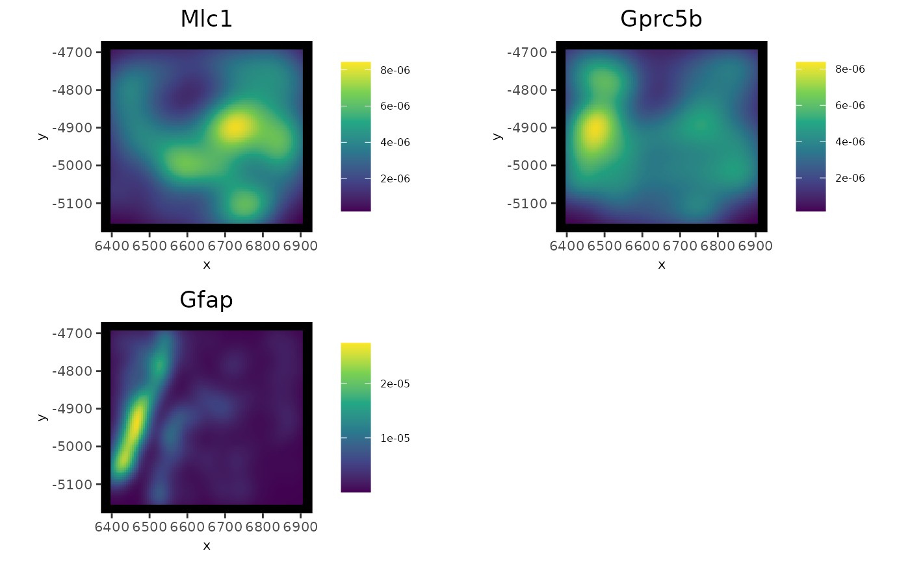

Function for density plots for features for multiple modalities at the spatial in situ level
Usage
spatInSituPlotDensity(
gobject,
feats = NULL,
feat_type = "rna",
sdimx = "x",
sdimy = "y",
alpha = 0.95,
show_polygon = TRUE,
use_overlap = FALSE,
polygon_feat_type = "cell",
polygon_color = "black",
polygon_fill = NULL,
polygon_fill_as_factor = NULL,
polygon_alpha = 0.5,
polygon_size = deprecated(),
polygon_line_size = 0.5,
coord_fix_ratio = 1,
axis_text = 8,
axis_title = 8,
legend_text = 6,
background_color = "black",
cow_n_col = NULL,
cow_rel_h = 1,
cow_rel_w = 1,
cow_align = "h",
show_plot = NULL,
return_plot = NULL,
save_plot = NULL,
save_param = list(),
default_save_name = "spatInSituPlotDensity"
)Arguments
- gobject
giotto object
- feats
features to plot
- feat_type
feature types of the feats
- sdimx
spatial dimension x
- sdimy
spatial dimension y
- alpha
alpha of density plot
- show_polygon
overlay polygon information (e.g. cell shape)
- use_overlap
whether features should be restricted to those overlapped by the
polygon_feat_typespatial unit.- polygon_feat_type
feature type associated with polygon information
- polygon_color
color for polygon border. Set
NAto remove border- polygon_fill
character. what to color to fill polgyons by (e.g. metadata col or spatial enrichment col)
- polygon_fill_as_factor
is fill color a factor
- polygon_alpha
alpha of polygon
- polygon_size
deprecated
- polygon_line_size
line width of the polygon's outline
- coord_fix_ratio
fix ratio between x and y-axis
- axis_text
axis text size
- axis_title
title text size
- legend_text
legend text size
- background_color
background color
- cow_n_col
cowplot param: how many columns
- cow_rel_h
cowplot param: relative heights of rows (e.g. c(1,2))
- cow_rel_w
cowplot param: relative widths of columns (e.g. c(1,2))
- cow_align
cowplot param: how to align
- show_plot
logical. show plot
- return_plot
logical. return ggplot object
- save_plot
logical. save the plot
- save_param
list of saving parameters, see
showSaveParameters- default_save_name
default save name for saving, don't change, change save_name in save_param
See also
Other In Situ visualizations:
spatInSituPlotHex(),
spatInSituPlotPoints()
Examples
g <- GiottoData::loadGiottoMini("vizgen")
#> 1. read Giotto object
#> 2. read Giotto feature information
#> 3. read Giotto spatial information
#> 3.1 read Giotto spatial shape information
#> 3.2 read Giotto spatial centroid information
#> 3.3 read Giotto spatial overlap information
#> 4. read Giotto image information
#> python already initialized in this session
#> active environment : '/usr/bin/python3'
#> python version : 3.12
spatInSituPlotDensity(g,
feats = c("Mlc1", "Gprc5b", "Gfap"),
polygon_feat_type = "z0"
)
